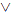
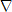

Chapter IV. Clade Names
Article 9. General Requirements for Establishment of Clade Names
9.1. The names of clades may be established through conversion of preexisting names or introduction of new names.
9.2. In order to be established, converted clade names must be clearly identified as such in the protologue by the designation "converted clade name" or "nomen cladi conversum." New clade names must be identified as such by the designation "new clade name" or "nomen cladi novum."
9.3. In order to be established, a clade name must be provided with a phylogenetic definition, written in English or Latin, linking it explicitly with a particular clade. The name applies to whatever clade fits the definition.
Note 9.3.1. The following are examples of phylogenetic definitions (this list is not exhaustive):
- A node-based definition may take the form "the clade originating with the most recent common ancestor of A and B" (and C and D, etc., as needed) or "the least inclusive clade containing A and B" (and C and D, etc.), where A–D are specifiers (see Art. 11.1). A node-based definition may be abbreviated "<A&B" or "<A&B&C&D [etc.]".
- A branch-based definition may take the form "the clade consisting of A and all organisms or species that share a more recent common ancestor with A than with Z" (or Y or X, etc., as needed) or "the most inclusive clade containing A but not Z" (or Y or X, etc.). A branch-based definition may be abbreviated ">A~Z" or ">A~ZYX [etc.]".
- An apomorphy-based definition may take the form "the clade originating with the first organism or species to possess apomorphy M as inherited by A" or "the most inclusive clade exhibiting character (state) M synapomorphic with that in A." An apomorphy-based definition may be abbreviated ">M(A)".
- A branch-modified node-based definition may take the form "the clade originating with the most recent common ancestor of A and all extant organisms or species that share a more recent common ancestor with A than with Z" (or Y or X, etc., as needed) or "the most inclusive crown clade containing A but not Z" (or Y or X, etc.), where (in both wordings) A is an extant specifier. This kind of definition may be abbreviated ">A~Z" or ">A~ZYX [etc.]". If this kind of definition is used and "extant" is intended to mean anything other than extant on the publication date of the definition, the author should specify the meaning of "extant" in the first wording or of "crown clade" in the second wording (within the restrictions described in Art. 9.4)—e.g., the internal specifiers were extant (and thus the clade was a crown clade) at a particular time in human history.
- An apomorphy-modified node-based definition may take the form "the clade originating with the most recent common ancestor of A and all extant organisms or species that possess apomorphy M as inherited by A" or "the most inclusive crown clade exhibiting character (state) M synapomorphic with that in A," where (in both wordings) A is an extant specifier. This kind of definition may be abbreviated ">M(A)." If this kind of definition is used and "extant" is intended to mean anything other than extant on the publication date of the definition, the author should specify the meaning of "extant" in the first wording or of "crown clade" in the second wording (within the restrictions described in Art. 9.4)—e.g., the internal specifiers were extant (and thus the clade was a crown clade) at a particular time in human history.
The system of abbreviations used here adopts the following conventions:
> = "the most inclusive clade containing";
< = "the least inclusive clade containing";
& = "and";
= "or";
~ = "but not";
A, B, C, etc. = species or specimens used as internal specifiers;
Z, Y, X, etc. = species or specimens used as external specifiers;
M = an apomorphy;
() = "of" or "synapomorphic with that in";
> = "the most inclusive crown clade containing";
< = "the least inclusive crown clade containing".
The inverted triangle meaning "crown clade" resembles the representation of a crown clade on a phylogenetic tree diagram.
For the definition of total clade names, see Art. 10.5.
Note 9.3.2. The application of a phylogenetic definition, and thus also of a phylogenetically defined clade name, requires a hypothesized phylogeny. To accommodate phenomena such as speciation via hybridization, species fusion, and symbiogenesis (see Note 2.1.3), the hypothesized phylogeny that serves as the context for the application of a phylogenetically defined name need not be strictly diverging.
Recommendation 9.3A. If a name is intended to refer to a crown clade, all of the internal specifiers used in the definition of that name should be extant.
Recommendation 9.3B. Because poorly chosen wordings of phylogenetic definitions can lead to undesirable consequences (i.e., the application of the name in a way that contradicts the author's intent), the wordings provided in Note 9.3.1 should generally be used for the corresponding kinds of definitions. If an alternative wording is used, it should be accompanied by the standard abbreviation (as provided in Note 9.3.1) to clarify the intent of the author in case the alternative wording is ambiguous or confusing. If the definition in words and its abbreviated form appear to be in conflict, the latter should be weighted most heavily in interpreting the author's intent. This recommendation does not preclude the use of other kinds of definitions that are not addressed in Note 9.3.1.
9.4. It is permissible to establish a name with a crown clade definition using an internal specifier that is not extant on the publication date under the following conditions: If that internal specifier is a species, either the specifier must have been extant as of 1500 CE or there must be specimens of the specifier species in existence that were collected when that species was extant. If that internal specifier is a specimen, the organism must either have died in or after 1500 CE or have been alive when it was collected.
9.5. If the author of a crown clade definition (Note 9.3.1) did not specify the meaning of "extant" or "crown clade", then subsequent authors are to interpret that definition as referring to organisms or species that were extant on its publication date (Art. 5).
9.6. In order for a clade name to be established, the protologue must include citation of a published reference phylogeny or an explicit statement about the distribution of one or more putative apomorphies supporting the existence of the clade being named. A reference phylogeny is a phylogenetic hypothesis that provides a context for applying a clade name by means of its phylogenetic definition. See Art. 11.8 concerning the inclusion of specifiers in the reference phylogeny.
Note 9.6.1. A reference phylogeny is not part of the definition and does not prevent the name from being applied in the context of alternative phylogenies.
Note 9.6.2. The reference phylogeny may be published in the same work in which the name is being established, or a previously published phylogeny may be cited.
Recommendation 9.6A. A reference phylogeny should be derived via an explicit, reproducible analysis.
Recommendation 9.6B. If more than one reference phylogeny is cited in the protologue, one of them, and ideally a single figure or tree, should be designated as the primary reference phylogeny.
9.7. In order for a clade name to be established, the protologue must include a statement about the hypothesized composition of the clade (e.g., a list of included species or subclades or reference to such a list).
9.8. In order for conversion to be effected, the preexisting name that is being converted to a phylogenetically defined clade name must be indicated. Direct and unambiguous bibliographic citations (as detailed in Art. 9.9) must be provided demonstrating (a) prior application of the name to a taxon approximating the clade for which it is being established (or to a paraphyletic group originating with the same ancestor; see Art. 10.1) and (b) authorship of the preexisting name (but see Rec. 9.8A) for the purpose of attribution (see Arts. 19, 20). In some cases, a single bibliographic citation will serve both purposes, but two different publications will have to be cited if the composition associated with the name by the original author differs substantially from that of the clade for which the converted name is being established.
Note 9.8.1. Errors in the bibliographic citation for a preexisting name should be corrected by subsequent authors, but they do not invalidate the establishment of the corresponding converted name.
Note 9.8.2. Demonstrating "prior application of the name to a taxon approximating the clade for which it is being established" does not necessarily require a modern phylogenetic analysis, and it does not require that the author of the prior application conceptualized the taxon as a clade. Application of a name in an earlier publication to a taxon approximating the clade for which it is being converted can be demonstrated based on information in that work—e.g., a list of subordinate taxa that are broadly consistent with, though not necessarily identical to, the composition of that clade, a description including diagnostic characters that we now understand to be synapomorphies of that clade, or statements and diagrams about phylogenetic relationships. When composition is used to assess the prior application of a name, the historical inclusion of taxa that are no longer considered to belong to the clade in question, or the historical exclusion of taxa that are now considered to belong to this clade, does not necessarily disqualify it as a preexisting name for the clade, provided that its application to that clade approximates traditional use to the degree that it is consistent with the contemporary concept of monophyly.
Example 1. Olmstead and Judd (20xx) applied the preexisting name Lamianae to the least inclusive clade containing Gentianales, Solanales, Lamiales, Boraginaceae, and Vahliaceae. The name Lamianae was first used by Takhtajan (1967), who applied it to a taxon that included Gentianales, Solanales, Lamiales, and Boraginaceae (though in some cases under different names) as well as some smaller taxa (e.g., Dipsacales, Polemoniaceae) that render his Lamianae polyphyletic in the context of currently accepted phylogenies. Takhtajan's inclusion of these taxa that are now considered to lie well outside the clade in question, and his omission of Vahliaceae, which is now thought to be part of that clade, do not disqualify Lamianae as a preexisting name for that clade.
Recommendation 9.8A. If possible, the bibliographic citation demonstrating authorship of the preexisting name should refer to the original publication of the name, spelled the same way as when converted and regardless of the rank and composition originally associated with the name (provided it is not a homonym; see Note 9.8A.1). If the original publication of the name cannot be determined, the earliest publication that can be found in which the name is valid (ICBN, ICNB) or available (ICZN) may be cited. If the publication cited is likely not to be the one in which the name was originally published, it should be explicitly stated that the author cited is likely not to be the nominal author (see Art. 19.1) of the name. Under certain conditions (see Notes 9.8A.2 and 9.8A.3), a differently spelled name may be cited. If a citation is for a different spelling than the one adopted in the converted name, the difference in the spelling of the name should be explicitly stated.
Note 9.8A.1. In order for two uses of identically spelled preexisting names to be considered the same name rather than homonyms (under a rank-based code), one use must have been derived from the other or both derived from a third use of the name. If later uses of a name are not accompanied by a reference to an earlier use, absence of any overlap in the compositions associated with identically spelled names can be taken as evidence that they are homonyms (Example 1). However, even if there is some overlap, evidence in the protologues may still indicate that the names are homonyms (Example 2).
Example 1. If the name Pholidota is to be established for a clade of mammals including the pangolins, Weber (1904) should be cited as the author of this name, even though an identically spelled name was published earlier by Merrem (1820). Merrem's (1820) Pholidota is considered a homonym, as it was used to refer to a non-overlapping group of organisms later known as Reptilia.
Example 2. If the name Angiospermae is to be established for the clade comprising the crown clade of flowering plants (or for the clade comprising all flowering plants), Lindley (1830) should be cited as the author of this name, even though an identically spelled name was published earlier by Crantz (1769). Crantz's (1769) Angiospermae is considered a homonym even though it was used to refer to a subset of the taxon that Lindley named Angiospermae. Crantz's Angiospermae was restricted to 13 genera of flowering plants within the clade that is now known as Lamiales. Lindley did not refer to Crantz's use of the name, and it is clear that Crantz did not intend the name to refer to all flowering plants.
Note 9.8A.2. For cases in which a preexisting name is attributed to the author of a differently spelled name in the same rank group (e.g., the family group) following the Principle of Coordination of the ICZN, that author is not considered under this code to be the author of the preexisting name, nor should the publication of the differently spelled name be cited as an example of use of the preexisting name. The author of the preexisting name is the author of the name as spelled for the purpose of conversion, even if an earlier author who spelled the name differently is considered to be the author of the name under the Principle of Coordination of the ICZN, and "the earliest publication that can be found in which the name is valid (ICBN, ICNB) or available (ICZN)" (in Rec. 9.8A) refers only to the converted spelling. However, in such cases, if the earliest author to spell the name as converted is difficult to determine, the person who is considered to be the author of the name under the Principle of Coordination of the ICZN may be cited instead, provided that the difference in the spelling of the name is explicitly stated.
Example 1. Under the ICZN (1999: Art. 36), Bell is considered to be the author of the name Iguaninae because this name was automatically established through the Principle of Coordination when Bell (1825) published Iguanidae, even though the first published use of the name Iguaninae was by Cope (1886). In contrast, under this code, Cope is considered to be the author of Iguaninae. However, if the first author(s) to use the name Iguaninae could not be determined, the author could be cited as Bell (1825; as Iguanidae).
Note 9.8A.3. For cases in which a preexisting name is attributed to the author of a differently spelled name whose ending has been "corrected" under a rank-based code to the standard ending designated for the rank at which it was published, that author is not considered under this code to be the author of the preexisting name, nor should the publication of the differently spelled name be cited as an example of use of the preexisting name. The author of the preexisting name is the author of the name as spelled for the purpose of conversion, even if an earlier author who spelled the name differently is considered to be the author of the name under the applicable rank-based code, and "the earliest publication that can be found in which the name is valid (ICBN, ICNB) or available (ICZN)" (in Rec. 9.8A) refers only to the converted spelling. However, in such cases, if the earliest author to spell the name as converted is difficult to determine, the person who is considered to be the author of the name under the applicable rank-based code may be cited instead, provided that the difference in the spelling of the name is explicitly stated.
Example 1. Under the ICBN (Art. 16.3), Jussieu (1789) is considered to be the author of the name Hypericaceae, even though he spelled the name Hyperica. Under the ICBN, the name is to be attributed to Jussieu but its spelling is "corrected" to Hypericaceae. In contrast, under this code, the author of the name is not considered to be Jussieu, but rather Horaninow (1834) [see in Bot. Rev. 71: 114 (2005)], who was the first person to publish it with the spelling Hypericaceae and in a form that satisfies the other requirements of the ICBN (see Art. 6.2). However, if the first author to spell the name "Hypericaceae" could not be determined, the authorship could be cited as Jussieu (1789; as Hyperica).
9.9. In order for a bibliographic citation to be direct and unambiguous, it must include author(s) (see Art. 19), year, title, journal name (where applicable), editors (where applicable), title of the edited book (where applicable), page(s), and plate or figure reference (where applicable). The author(s)' and (where applicable) editor(s)' surname(s) must be cited in full, not abbreviated.
Note 9.9.1. If the protologue or subsequent use of the name to which a bibliographic citation refers is part of a publication with consecutive pagination, the page on which the protologue or subsequent use appears should be cited, as opposed to citing only the range of pages of the entire publication.
Recommendation 9.9A. To avoid confusion, the author(s)' given name(s) should also be cited, either as initials or, if the surname is particularly common, in full.
9.10. If the author of an apomorphy-based definition based on a complex apomorphy did not identify which aspect(s) of that apomorphy must be present in order for an organism to be considered to belong to the clade whose name is defined by that apomorphy (Rec. 9E), or if an aspect that the author did identify is later found to be a complex apomorphy itself, then subsequent authors are to interpret the definition as applying to the most inclusive clade diagnosed by the presence of all of the components of the complex apomorphy described by the author of the definition or present in the taxa or specimens that the author considered to possess that apomorphy.
Recommendation 9A. Establishment of clade names should be done with careful consideration of possible nomenclatural consequences if the phylogenetic hypothesis turns out to be incorrect. It may frequently be advisable to use only informal names for poorly supported clades.
Recommendation 9B. Conversion of preexisting names to clade names should only be done with a thorough knowledge of the group concerned, including its taxonomic and nomenclatural history and previously used diagnostic features. Wholesale conversion of preexisting names by authors who have not worked on the systematics of the group concerned is strongly discouraged.
Recommendation 9C. In order to facilitate the referral of species that are not specifiers of the clade name, the protologue should include a description, diagnosis, or list of synapomorphies.
Recommendation 9D. If an apomorphy-based definition is used, or if an apomorphy is cited in a qualifying clause, the apomorphy should be described or illustrated in sufficient detail that users of the definition will understand the author's intent.
Recommendation 9E. If an apomorphy-based definition is used, and if the apomorphy is a complex character that could have evolved in a stepwise fashion, then the author should identify which aspect(s) of that apomorphy must be present in order for an organism to be considered to belong to the clade whose name is defined by that apomorphy.